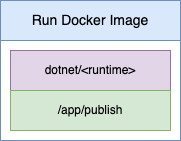
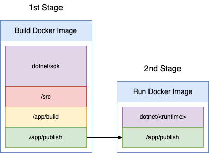

.NET and Docker Part 2a - Bonus Post
Docker Multi-Stage Builds
Introduction
In the previous post in this Docker and .NET series (here) a multi-stage Docker build was used to both build the code and create a Docker image that we can run. This post is a bit of an aside/bonus post that discusses the benefit of using multi-stage builds for building .NET images.
Building a .NET Solution with Docker
The following shows the process of building a .NET solution with Docker. (This is in fact a graphical representation of what we did in the last post).

This also shows us all of the contents within the Docker image we've created when building and publishing our code. There is a lot of stuff in this image if all we want to do is run our application. We only need the contents of the /app/publish folder and none of: the SDK, source code or the contents of the build folder. This is all superfluous and bloating the size of the image we actually need to just run the app.
Running a .NET App in Docker
All we actually need to run a .NET app in Docker is the .NET runtime and published app. Creating an image that looks like:

Where <runtime> is one of the available runtimes (list here). This image is much more streamlined than the previous build Docker image and clearly more desirable.
Multi-Stage Docker Builds
We can achieve both the building of an app in Docker and the creation of the streamlined/low foot print Docker image to run the app by using a multi-stage Docker build:

In the first stage we build and publish the app from the source code using the SDK. In the second stage of the build we copy the output of the publish to a new image which is based on just the runtime we need. Discarding the first image and keeping only the second image. The result is a small, compact image we can use to run our app.